My Role
UX Researcher + UX Designer
Time Range
4 Weeks (Team) + 1 week (individual) | Fall 2020
Team
Zhen Xu, An Huynh, Juan Sandoval, Mehail Sunny-Mathew
Introduction
The focus of this project is to redesign a major travel site - Booking.com to address some of the flaws in the original design and to make the process of booking flights, hotels, and basic services provided by Booking.com easier.
This project is done mostly by the whole team; however, due to the time constraints of a quarter system, our team only worked up to the Mid-Fi prototype and called an end to this project. However, I think it’s worthwhile to spend the time to wrap up this project by creating a fully interactive hi-fi prototype by myself that demonstrates one potential solution for the problems defined in the user testing.
Research
To define the pain points of navigating through Booking.com, we conduct usability testing with four users. The usability testing is broken in 3 different sections: introduction, main tasks, and debrief. The introductory questionnaires aim at gathering some general background information about the users’ level of experience with using a travel website, while also making them comfortable with the testing session. The main tasks section is the bulk of collecting observational data and seeing if there are any prominent usability errors appear across these users. Lastly, the debrief section is giving the user an opportunity to reflect their overall experience with Booking.com.
The user testing plan is listed below:
- Introduction
- When is the last time you travel?
- How do you usually plan your travel?
- What are the major factors that contribute to your travel plan?
- What are some good and bad experiences you had before while traveling?
- Tasks
- You have a $5000 budget to plan your one week (7-days, 6 nights) trip from San Diego, US to London, UK around Christmas break.
- Book a round trip flight, hotel, and rent a car that you will pick up and drop off in the airport you landed.
- Find things that you will be interested in doing in London
- Debrief
- What do you like and don’t like about the website?
- Would you recommend this website to your friends? Why or why not?
Analysis
During the analysis stage, our team decides to analyze the four users at individual level before migrating to the decision stage of defining the redesign components. The key point to stress in this project is there’s no such notion about how will an average user navigate through a website/application because each user is unique given their different level of experiences, expectations, and culture constraints.
User 1: The first user is a relative new user to Booking.com. Though there may be some limitations, it’s important to observe his interaction with the website and see if the website is intuitive. It’s important to note he is relatively new to the car rental process as well since renting a car is one of the tasks we instructed him to perform. The limitations include unfamiliarity with the booking website’s language and may not know what they are expecting in this kind of booking website. The usability error he encountered include:
- Hidden feature: The tasks we ask him to perform can be done via one section that is the bundle options of “hotel + flight + car”, but the user was not able to locate such option due to lack of visibility of system status. 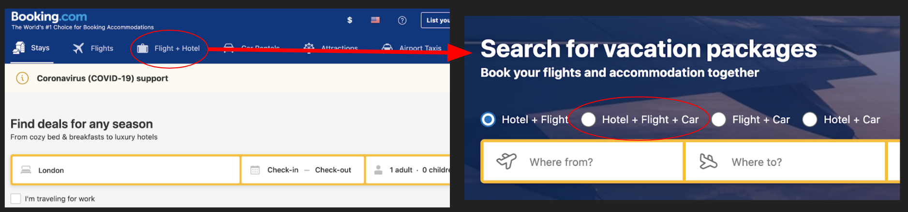
- Not enough visibility of system status: User intended to choose 7 days, but ended up choosing a 3 days vacation and did not notice it. This is because the user quickly scanned through the calendar and did not notice his misclick action; thus assuming his search generated what he is looking for. One potential solution is the range of the pick date should be visible instead of using the light grey color where the users can’t distinguish from the white background. 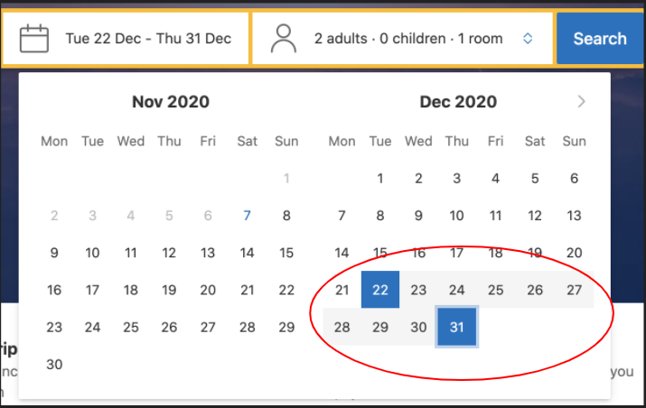
- Important information is not prominent: User’s age is around 20 but he did not notice his age plays an important factor (such as affecting the price range) while generating the car rental search. The user did not see the “Driver aged between 30 - 65” is automatically checked, thus did not uncheck the box to provide accurate information about himself. 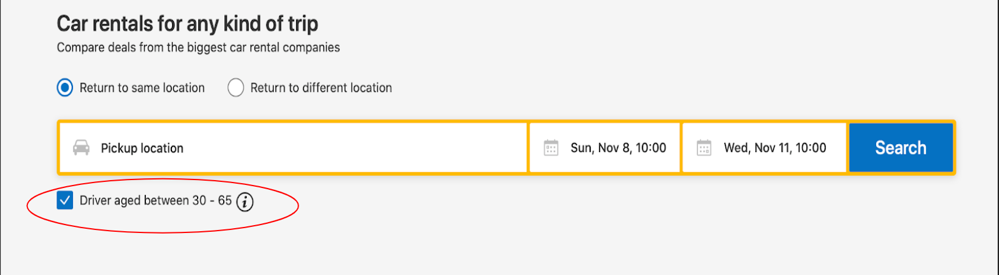
Despite these usability errors, the user manages to find the options (including flight, car rental, booking a hotel) individually. The only problem is he is not being able to recognize the existence of accelerators that can speed up the task of booking a full trip.
User 2: This user is also a new user to the booking.com and will have similar limitations compared to user 1. But he is still appropriate for this user testing because we can gain insight about how “new” users interact with booking.com. Though the user did not use booking.com, he is a frequent traveler since he travels once per year, so he should be more familiar with the booking process and is able to provide insight about other competitors.
- Misunderstand the website’s language: Unlike the first user, he was able to see the age verification. However, he thought the “driver aged between 30 - 65” meant he is renting a driver to drive the car instead of him driving the rented car. The confusion may be due to he is relatively new to the car rental process.
- Important information is not prominent: Important information was not recognized by the user such that the user does not know how to drive a manual car, but he ended up choosing to rent a manual car because he did not see the car type during his selection. This could lead him to make an error without noticing while booking the car rental, which could lead to future disaster after he lands in the foreign country. 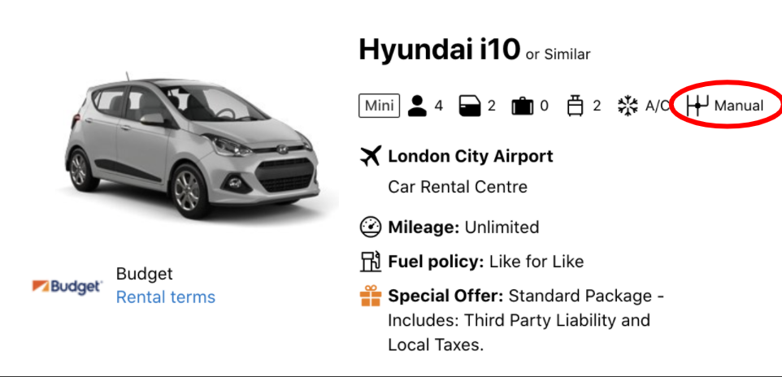
- Missing expected competitive feature: The user spent time to look for an expected feature that conventionally most travel websites have. For example, the user is looking for a filter section that allows him to set the maximum price of what he’s looking for. But as the screenshot(s) show, the feature is missing. (the screenshots are taking in the “Hotel + Flight + Car” generated search result) 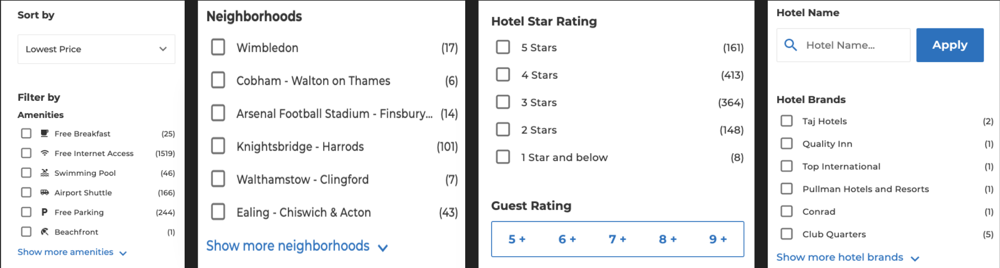
User 3: This user is an appropriate user because she has some familiarity with booking.com given that her mom is a travel agent and uses the website pretty frequently. She is also a frequent traveler, so she has some experiences of planning a trip using a booking website, like booking.com. One limitation is that she may be biased to favor the website because her family, including herself are frequent users of booking.com.
- Error message is not prominent: When she applied the filter, she spent a lot of time scrolling through the search result and still could not find her “suitable” place to stay. This is because she did not recognize the error message of the system cannot find her matched hotel based on her filters. 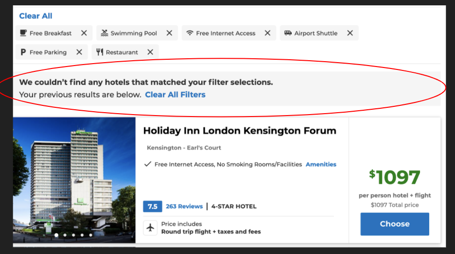
- Hidden Feature: She manages to find the options (including flight, car rental, booking a hotel) individually, which takes a lot of his time while exploring. The tasks we ask her to perform can be done via one section that is the bundle options of “Hotel + Flight + Car”, but the user was not able to locate such option due to lack of visibility of system status. After she found out the bundle options, she thought the time she spent before was a waste (similar to previous users).
- Wrong expectation: After generating her filtered result, the first screenshot suggests that there are 2000+ more options the user can view, but the user was unsure why it was only showing 1 at a time. When she clicked “load more hotels”, the second screenshot showed up, and she was confused why this happened. The website’s wording leads the user to have the wrong expectation. 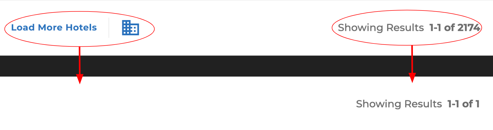
User 4: This user is an appropriate user because he is a semi-frequent traveler and has booked his own trips in the past. He has not used booking.com directly but has used similar sites. He mostly uses Expedia to book his flights/trips, so one limitation might be that he is biased towards Expedia’s interface. This may lead to some faulty expectations while navigating through booking.com.
- Hidden feature: Like most of the users above, this user also misses the bundle option of hotel+car+flight due to lack of visibility of system status; thus, spend a lot of time exploring different booking services individually.
- Wrong expectation / lack of internal consistency: When the user wanted to transition from looking for a place to stay and booking a flight to look things he will be interested to do (attraction tab), he tried to click the booking.com logo from the ‘flight + hotel’ result page (right screenshot) and expect it will direct him back to the homepage. However, the logo is not clickable. Thus, he chose to retype the full website address again.
- It’s important to note that the logo does lead the users back to the homepage in some instances and not the others, which clearly demonstrate a failure to maintain internal consistency.
- Wrong Expectation: He expected that all the filters would be on the left side of the screen where it said “Filter by”, so he thought the website didn’t have a feature to sort by lowest to highest price. Given that he is a price oriented user, he was disappointed that some filters are situated in different locations. Observing other sites within booking.com, all filter options (including the sort by) are placed in the left side, which the screenshot shows it failed their internal consistency. 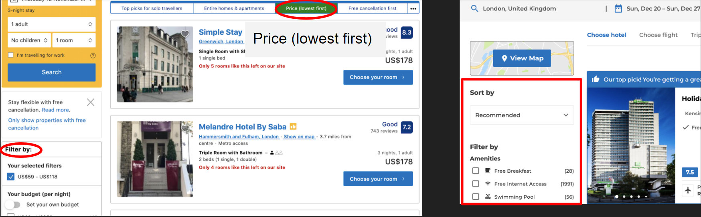
Redesign Component
All users we interviewed did not notice the bundle option and had searched for each component individually before realizing that was an option. Since the package feature is important, we should redesign the layout of the homepage, so the user can spot the information right away. Therefore, the redesign component we choose to focus on is Redesigning the home page to reflect a clearer visibility of the bundle option (“Hotel + Flight + Car”) instead of hiding the package feature.
Prototypes
Mid-fi Prototype
The first redesign suggestion aims to highlight what the users can book (ex. flight , hotel, car rental, and airport Taxi) either as an individual component or multiple components combining together to build their own trip. Depending on what the users pick (or do not pick), the next screen will be appropriately generated as the original webscreen, shown in the next slide. This redesign enables the users to know they can build their trip ahead of time rather than spending time to book different things individually. Since everything they can book simultaneously is upfront, it is up to the users’ decision/preference moving forward.
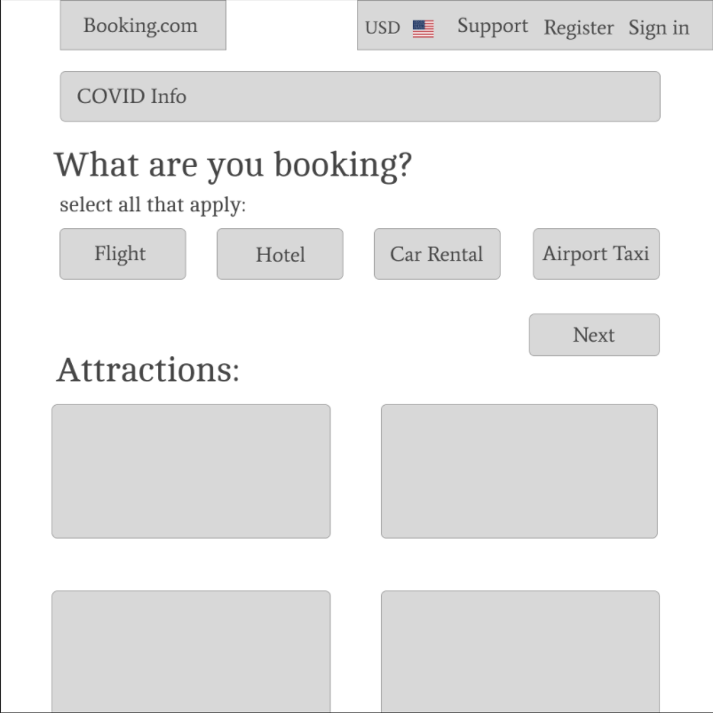Redesign 1 - Navigation Flow
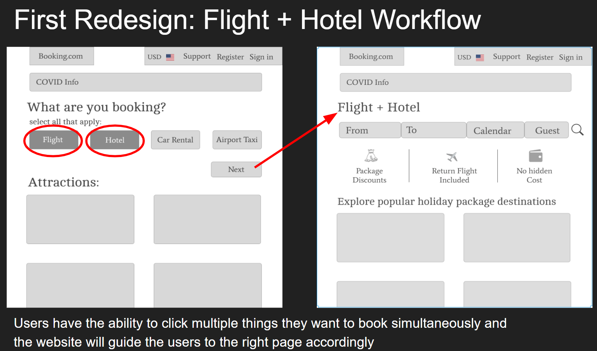
The second redesign has the idea to get rid of the extra noise in the original design and strictly allow the users to focus on what can be done with the website. The section headings are also brought to the eyesight near the text entry bar because the user testing results suggest that one reason users ignore the section is the text entry bar where they enter the destination is most prominent in their view. Thus, by bringing the section heading near it, it can be more attention getting.
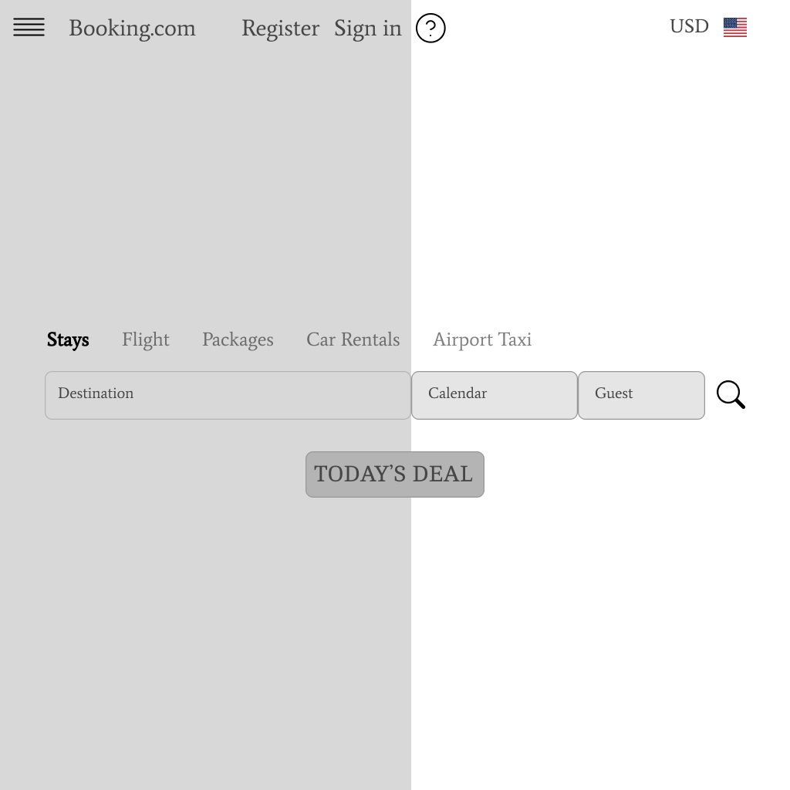From user testing, all users were able to spot the filter section spontaneously because the section was placed on the left side of the screen. This implies the entry point of the users may be on the left side of the screen; thus, for the second redesign, we place the booking category (section headings) in the left field. And by convention, the menu icon should be situated in the top left corner. This menu function also allows the users to change different booking options without the need to retype their destination numerous times and going back to the first landing page.
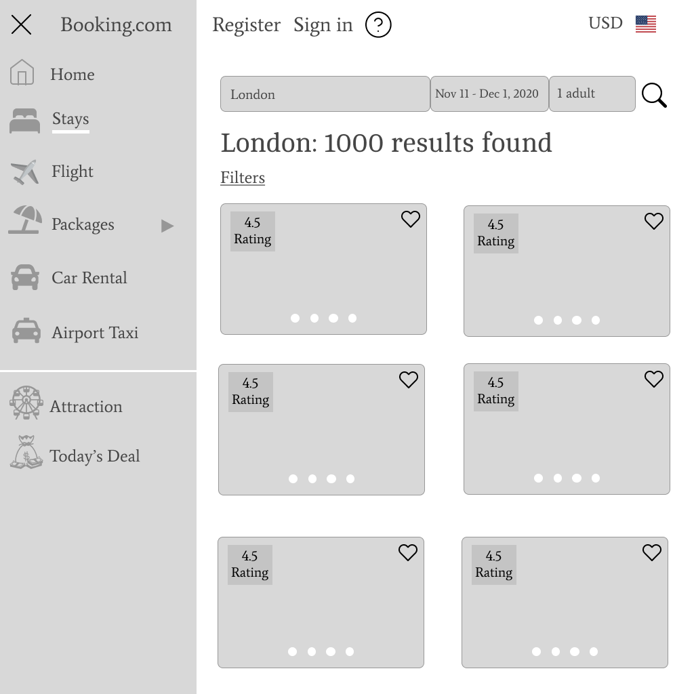Hi-Fi Prototype
Up to the mid-fi prototype section, it was done for a school project with my teammates. With my spare time, I decided to create a hi-fi mockup for the second redesign to illustrate a potential workflow that may enhance a user's experience of booking a trip and or a full vacation by just using Booking.com.
Click here to see the fully-interactive prototype
As mentioned above, the landing page brings the package options and other options (stay, flight, airport taxi, and car rental) near the text entry box, which is the attention spot for most users. This attention spot is observed through the user testing such that all 4 of the users have no problem recognizing where to generate the search since this is the main task they need to do while visiting Booking.com. By bringing the package options back to the attention spot, it’s easier for the users to recognize the bundling features.

Even if some users did not realize the meaning of “package”, they will soon figure the context out based on the menu section after generating a search. The flow of this redesign for users to spot the “package” section can be achieved by clicking the menu icon, the subsections of various packages will be situated in the dropdown menu for the users to choose. After they click a specific combination, it will lead them to an appropriate webpage that allows them to enter more specific details.
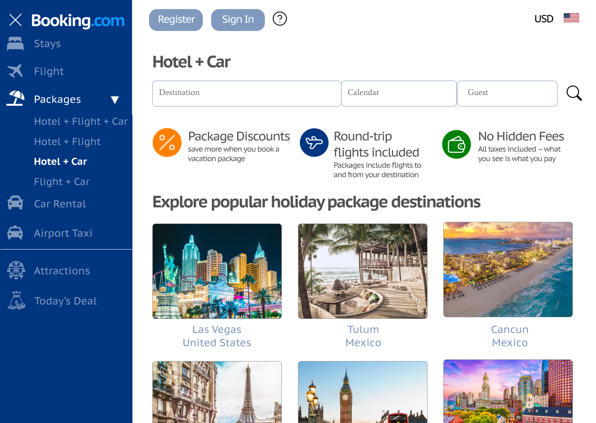Reflection
This project is relatively fast-paced, making different stages to have quick turnaround, and limit the numbers of redesign components. Through analyzing the user testing, it is worthwhile to offer a potential solution of improving the prominence of important messages, such as error message and validation message to prevent the users from making an error in future research. Based on the 4 user testings, most users bypass some relevant information that may be important to them, such as age validation when renting a car, type of car the user is renting (auto vs manual), and error message when filtered results cannot be found.
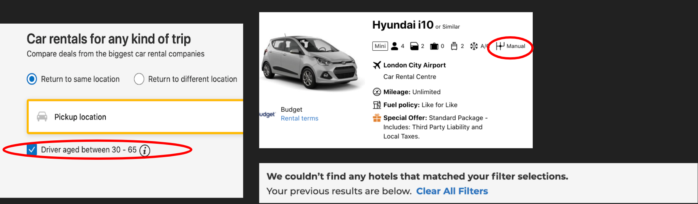Although this project only conducts usability testing among 4 users to decide a redesign component, an important lesson I learned is around 3 to 4 users are sufficient to improve the original design by identifying and fixing usability problems, and the analysis generates actionable insights rather than proof.